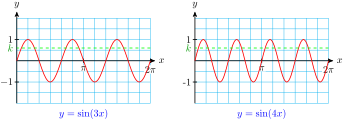

Subsection Introduction
We have seen that an equation of the form \(\sin (\theta) = k\) (for \(-1 \lt k \lt 1\)) always has two solutions between \(0\) and \(2\pi \text{.}\) For example, the figure below illustrates that \(x=\dfrac{\pi}{6}\) and \(x=\dfrac{5\pi}{6}\) are solutions of the equation \(\sin (x) = 0.5\text{.}\) These two solutions correspond to the two points on the unit circle where \(y=0.5\text{.}\)
The calculator gives us only one of these solutions, but we can use reference angles to find the other solution. In fact, if we use a calculator to find one solution as \(\theta_{1}=\sin^{-1}(k)\text{,}\) then the other solution is \(\theta_{2}=\pi - \theta_{1}\text{.}\) You can see this by considering the symmetry of the sine graph, or of the unit circle, as shown below.
This relationship between the two solutions still holds if \(k\) is negative, because the calculator returns a negative angle for \(\theta_{1}=\sin^{-1}(k)\text{.}\) See the figure below.
Example 7.26.
Solve \(~~\sin (\theta) = -0.58~~\) for \(0 \le \theta \lt 2\pi\text{.}\)
Solution.
The calculator gives us the solution
\begin{equation*}
\sin^{-1}(-0.58)=-0.6187
\end{equation*}
However, because this solution is not between \(0\) and \(2\pi\text{,}\) we find a coterminal angle,
\begin{equation*}
\theta_{1}=\sin^{-1}(-0.58)+2\pi = -0.6187+2\pi=5.6645
\end{equation*}
for the solution in the fourth quadrant. The second quadrant solution is
\begin{equation*}
\theta_2=\pi-\sin^{-1}(-0.58)=\pi +0.6187=3.7603
\end{equation*}
To four decimal places, the desired solutions are 3.7603 and 5.6645.
A similar method applies to equations of the form \(\cos (\theta) = k\text{.}\) The two solutions between \(0\) and \(2\pi\) are \(\theta_{1}=\cos^{-1}(k)\) and \(\theta_{2}=2\pi -\cos^{-1}(k)\text{.}\) Once again, you can see this by considering the symmetry of the cosine graph, or of the unit circle, as shown below.
The relationship between the two solutions still holds if \(k\) is negative. See the figure below.
Checkpoint 7.27.
Solve \(~~\cos (\theta) = -0.36~~\) for \(0 \le \theta \lt 2\pi\text{.}\)
Equations of the form \(\tan (\theta) = k\) are generally easier to solve, because there is only one solution in each cycle of the graph. Each solution differs from the previous one by \(\pi\text{,}\) as shown below.
For example, to solve the equation \(\tan (\theta) = -2.4\) for \(0 \le \theta \lt 2\pi\text{,}\) we first calculate
\begin{equation*}
\tan^{-1}(-2.4)=-1.1760
\end{equation*}
Because this angle is not between \(0\) and \(2\pi\text{,}\) we add \(\pi\) to find the next two solutions:
\begin{align*}
\theta_{1}\amp = -1.1760+\pi=1.9656\\
\theta_{2}\amp = 1.9656+\pi=5.1072
\end{align*}
We summarize these observations for the three trigonometric functions as follows.
Solutions of Trigonometric Equations.
The equation
\(\cos (\theta) = k, ~~ -1\lt k \lt 1\text{,}\) has two solutions between
\(0\) and
\(2\pi\text{:}\)
\begin{equation*}
\theta_{1}=\cos^{-1}(k)~~ \text{and}~~ \theta_{2}=2\pi -\theta_{1}
\end{equation*}
The equation
\(\sin (\theta) = k, ~~ -1\lt k \lt 1\text{,}\) has two solutions between
\(0\) and
\(2\pi\text{:}\)
\begin{equation*}
\text{If}~k \gt 0:~~ \theta_{1} =\sin^{-1}(k)~~ \text{and}~~ \theta_{2}=\pi -\theta_{1}
\end{equation*}
\begin{equation*}
\text{If}~k \lt 0:~~ \theta_{1}=\sin^{-1}(k) + 2\pi ~~ \text{and}~~ \theta_{2}=\pi -\sin^{-1}(k)
\end{equation*}
The equation
\(\tan (\theta) = k\text{,}\) has two solutions between
\(0\) and
\(2\pi\text{:}\)
\begin{equation*}
\text{If}~k \gt 0:~~ \theta_{1}=\tan^{-1}(k)~~ \text{and}~~ \theta_{2}=\pi +\theta_{1}
\end{equation*}
\begin{equation*}
\text{If}~k \lt 0:~~ \theta_{1}=\tan^{-1}(k) + \pi ~~ \text{and}~~ \theta_{2}=\pi +\theta_{1}
\end{equation*}
Activity 7.3. Solving Equations.
Solutions of \(\sin (x) = k,~ k \gt 0\)
Use your calculator to graph \(y=\sin (x)\) and \(y=0.6\) for \(0 \le x \le 2\pi\text{.}\)
Use the Trace and intersect features to find the smallest solution to \(\sin (x) = 0.6\text{,}\) accurate to two decimal places.
Look at the graph, and by symmetry write an expression for the second solution. Hint: What is the \(x\)-coordinate of the first \(x\)-intercept of \(\sin (x)\text{?}\)
Solutions of \(\sin (x) = k,~ k \lt 0\)
Use your calculator to graph \(y=\sin (x)\) and \(y=-0.6\) for \(0 \le x \le 2\pi\)
On your graph, locate the solution to \(\sin (x) = -0.6\) given by \(\sin^{-1}(-0.6)\text{.}\)
Can you write an expression for the second solution similar to the expression you wrote in part (1c)?
Solutions of \(\sin (nx) = k,~ k \lt 0\)
Use your calculator to graph \(y=\sin (2x)\) and \(y=0.6\) for \(0 \le x \le 2\pi\text{.}\)
How many solutions are there to the equation \(\sin (2x) = 0.6\text{?}\)
Look at the first two solutions. How are they related to the solutions of \(y=\sin (x) = 0.6\) that you found in part (1)? Test your conjecture by using the Trace and intersect features.
If you know the first two solutions of \(\sin (2x) = 0.6\text{,}\) how can you find the other solutions? Hint: What is the period of \(y=\sin (2x)\text{?}\)
Solutions of \(\cos (nx)=k\)
Repeat part (1) for \(y=\cos (x)\) and \(y=0.6\text{.}\)
Repeat part (2) for \(y=\cos (x)\) and \(y=-0.6\text{.}\)
Repeat part (3) for \(y=\cos (2x)\) and \(y=0.6\text{.}\)
Subsection Multiple Solutions
If \(n\) is an integer, what can we say about the solutions of the equation
\begin{equation*}
\sin (nx) = k~~ \text{?}
\end{equation*}
For example, how many solutions are there for the equation \(\sin (2x)=0.5\text{?}\) The figure below shows that this equation has four solutions between \(0\) and \(2\pi\text{.}\) The graph of \(y=\sin (2x)\) completes two cycles between \(0\) and \(2\pi\text{,}\) and each cycle produces two solutions, for a total of four.
Example 7.28.
Find all solutions of \(~~\sin (2x)=0.5~~\) between \(0\) and \(2\pi\text{.}\)
Solution.
We begin as usual, by taking the inverse sine of each side of the equation, to get
\begin{equation*}
2x=\sin^{-1}(0.5)
\end{equation*}
There are two values of \(2x\) between \(0\) and \(2\pi\) with \(\sin (2x)=0.5\) namely \(2x=\dfrac{\pi}{6}\) and \(2x=\pi - \dfrac{\pi}{6}=\dfrac{5\pi}{6}\text{.}\) Solving these equations for \(x\) yields \(x=\dfrac{\pi}{12}\) and \(x=\dfrac{5\pi}{12}\text{.}\)
But these are only two of the four solutions! The graph of \(y=\sin (2x)\) completes two cycles between \(0\) and \(2\pi\text{,}\) each of length \(\pi\text{.}\) We must add \(\pi\) to each of the first two solutions to find the solutions in the second cycle. These two solutions are
\begin{equation*}
\dfrac{\pi}{12}+\pi=\dfrac{13\pi}{12}~~ \text{and}~~ \dfrac{5\pi}{12}+\pi=\dfrac{17\pi}{12}
\end{equation*}
Note that the solutions in the second cycle are still less than \(2\pi\text{,}\) so they must be included in the set of all solutions between \(0\) and \(2\pi\text{.}\) The four solutions are \(\dfrac{\pi}{12},~\dfrac{5\pi}{12},~\dfrac{13\pi}{12}\) and \(\dfrac{17\pi}{12}\text{.}\)
Checkpoint 7.29.
Sketch a graph of \(~~y=\cos (2x)~~\) for \(0 \le x \le 2\pi\text{.}\)
Find exact values for all solutions of \(\cos (2x)=\dfrac{-\sqrt{2}}{2}\) between \(0\) and \(2\pi\text{.}\)
Answer.
\(\displaystyle \dfrac{3\pi}{8},~\dfrac{5\pi}{8},~\dfrac{11\pi}{8},~\dfrac{13\pi}{8}\)
As we observed earlier, equations involving the tangent function are easier to solve, because there is only one solution in each cycle of the graph. Once we have found one solution, we can find all the others by adding multiples of the period.
Example 7.30.
Find all solutions of \(~~\tan (2t)=-1~~\) between \(0\) and \(2\pi\text{.}\)
Solution.
We expect to find four solutions between \(0\) and \(2\pi\text{.}\) The first angle \(2t\) between \(0\) and \(2\pi\) whose tangent is 1 is \(2t=\dfrac{3\pi}{4}\text{,}\) so the first solution is \(t_{1}=\dfrac{3\pi}{8}\text{.}\) Now, the period of the graph of \(y=\tan (2t)\) is \(\dfrac{\pi}{2}\text{,}\) as shown at right.
There is one solution in each cycle, so we add multiples of \(\dfrac{\pi}{2}\) to \(t_{1}\) to find the other solutions.
\begin{align*}
t_{2}\amp=\dfrac{3\pi}{8}+\dfrac{\pi}{2}=\dfrac{7\pi}{8}\\
t_{3}\amp=\dfrac{7\pi}{8}+\dfrac{\pi}{2}=\dfrac{11\pi}{8}\\
t_{4}\amp=\dfrac{11\pi}{8}+\dfrac{\pi}{2}=\dfrac{15\pi}{8}
\end{align*}
The four solutions are \(\dfrac{3\pi}{8},~ \dfrac{7\pi}{8},~ \dfrac{11\pi}{8}\) and \(\dfrac{15\pi}{8}\text{.}\)
Checkpoint 7.31.
Find all solutions of \(~~\tan (2x)=\sqrt{3}~~\) between \(0\) and \(2\pi\text{.}\)
Answer.
\(\dfrac{\pi}{6},~\dfrac{2\pi}{3},~\dfrac{7\pi}{6},~\dfrac{5\pi}{3}\)
The larger the value of \(n\text{,}\) the more cycles the graph completes between \(0\) and \(2\pi\text{,}\) and the more solutions we find. Thus, for \(-1 \lt k \lt 1\text{,}\) there are six solutions of \(\sin (3x)=k\) between \(0\) and \(2\pi\text{,}\) eight solutions of \(\sin (4x)=k\text{,}\) and so on. (See the figure below.)

Subsection Using a Substitution
For more complicated equations, it can be helpful to use a substitution, in order to reduce the equation to the form \(~\sin (\theta)=k~\) or \(~\cos (\theta)=k~\) or \(~\tan (\theta)=k\text{.}\) We want our substitution to replace the input of the sine function by a single variable. For example, in the next example, we substitute \(\theta\) for the angle \(2x+1.5\text{,}\) so that the equation \(~\sin (2x+1.5)=-0.3~\) becomes \(\sin (\theta) = -0.3\text{.}\)
Example 7.34.
Use a substitution to solve \(~~\sin (2x+1.5)=-0.3~~\) for \(0 \le x \le 2\pi\text{.}\)
Solution.
We expect to find four solutions. Let \(\theta = 2x+1.5\text{,}\) and use a calculator to find two solutions of \(\sin (\theta) = -0.3\text{.}\) The solutions, rounded to three decimal places, are
\begin{equation*}
\theta_{1}=\sin^{-1}(-0.3)=-0.3047 ~~ \text{and} ~~ \theta_{2}=\pi - \sin^{-1}(-0.3)=3.4463
\end{equation*}
Because \(\theta\) is not between \(0\) and \(2\pi\text{,}\) we find a coterminal angle,
\begin{equation*}
\theta_{1}=\sin^{-1}(-0.3)+2\pi = 5.9785
\end{equation*}
Next we replace \(\theta\) by \(2x+1.5\) to find two of the solutions of the original equation:
\begin{align*}
2x+1.5 \amp = 3.4463 \amp\amp \text{and} \amp 2x+1.5 \amp = 5.9785\\
x_{1} \amp = 0.9731 \amp\amp \amp x_{2}\amp =2.2392
\end{align*}
Finally, because the period of the function \(f(x)=\sin (2x+1.5)\) is \(\pi\text{,}\) we find the other two solutions by adding \(\pi\) to the first two solutions, to get
\begin{align*}
x_{3}\amp=0.9731+\pi = 4.1147\\
x_{4}\amp=2.2392+\pi=5.3808
\end{align*}
Rounded to hundredths, the four solutions are 0.97, 2.24, 4.11, and 5.38.
Checkpoint 7.35.
Use a substitution to solve \(~~4\cos (3x-0.5) = -3.2~~\) for \(0 \le x \le 2\pi\text{.}\)
Answer.
\(1.00, 1.43, 3.09, 3.52, 5.19, 5.62\)
Here is our strategy for solving trigonometric equations by using a substitution.
Using a Substitution to Solve Trigonometric Equations.
To solve the equation \(\sin (Bx+C)=k\) or \(\cos (Bx+C)=k\text{:}\)
Substitute \(\theta = Bx+C\text{,}\) and find two solutions for \(\sin (\theta) = k\) or \(\cos (\theta) = k\text{.}\)
Replace \(\theta\) by \(Bx+C\) in each solution, and solve for \(x\text{.}\)
Find the other solutions by adding multiples of \(\dfrac{2\pi}{B}\) to the first two solutions.
To solve the equation \(\tan (Bx+C)=k\text{:}\)
Substitute \(\theta = Bx+C\text{,}\) and find one solution for \(\tan (\theta) = k\text{.}\)
Replace \(\theta\) by \(Bx+C\) and solve for \(x\text{.}\)
Find the other solutions by adding multiples of \(\dfrac{\pi}{B}\) to the first solution.
Example 7.36.
Find all solutions between \(0\) and \(2\pi\) to \(~~5+0.4\tan (3x-0.5)=4.5\text{.}\)
Solution.
The graph of \(f(x)=5+0.4\tan (3x-0.5)\) completes six cycles between \(0\) and \(2\pi\text{,}\) so we expect to find six solutions, as illustrated below. We’ll use the substitution \(\theta=3x-0.5\) to reduce the equation to \(5+0.4\tan (\theta)=4.5\text{.}\) Next, we isolate the trig ratio.
Subtract 5 from both sides of the equation, then divide by 0.4.
\begin{align*}
0.4\tan \theta \amp = -0.5\\
\tan \theta \amp = -1.25
\end{align*}
Now we can solve for \(\theta\text{.}\)
\begin{equation*}
\theta = \tan^{-1}(-1.25)=-0.8960
\end{equation*}
Replacing \(\theta\) by \(3x-0.5\text{,}\) we find the first solution.
\begin{align*}
3x-0.5 \amp = -0.8960\\
3x\amp = -0.3960\\
x \amp = -0.1320
\end{align*}
This value of \(x\) is not between \(0\) and \(2\pi\text{,}\) but because the period of \(f(x)\) is \(\dfrac{\pi}{3}\text{,}\) we can add \(\dfrac{\pi}{3} \approx 1.0472\) to any solution to find another solution.
\begin{align*}
x_{1} \amp =-0.1320+1.0472=0.9152\\
x_{2} \amp =0.9152+1.0472=1.9624\\
x_{3} \amp =1.9624+1.0472=3.0096\\
x_{4} \amp =3.0096+1.0472=4.0568\\
x_{5} \amp =4.0568+1.0472=5.1040\\
x_{6} \amp =5.1040+1.0472=6.1512
\end{align*}
We stop here, because the next solution is greater than \(2\pi\text{.}\) Rounded to two decimal places, the six solutions are 0.92, 1.96, 3.01, 4.06, 5.10, and 6.15.
Checkpoint 7.37.
Graph \(~~y=2-4\tan 3(x+0.2)~~\) from \(x=0\) to \(x=2\pi\text{.}\)
Find all solutions of \(2-4\tan 3(x+0.2)=5\) between \(0\) and \(2\pi\text{.}\) Round your answers to two decimal places.
Answer.
\(\displaystyle 0.63, 1.68, 2,73, 3.77, 4.82, 5.87\)
Exercises Homework 7-3
Exercise Group.
For Problems 1–10,
Use a graph to estimate all solutions between \(0\) and \(2\pi\text{.}\)
Give exact values for the solutions between \(0\) and \(2\pi\text{.}\)
1.
\(\sin (4x) = -1\)
2.
\(\cos (3t) = 0\)
3.
\(5\tan (2q) = 0\)
4.
\(6\sin (4w) = -3\sqrt{2}\)
5.
\(4\cos (3\phi) = -2\)
6.
\(\sqrt{3}\tan (2\alpha) = 3\)
7.
\(2\sin (2\beta) = 1\)
8.
\(-6\cos (2\theta) = 6\)
9.
\(3\tan (3w) = \sqrt{3}\)
10.
\(2\tan (3u) = -2\)
Exercise Group.
For Problems 11–20, find all solutions between \(0\) and \(2\pi\text{.}\) Round your answers to three decimal places.
11.
\(9\cos (2\theta) + 1 = 6\)
12.
\(7\cos (2t)-3=2\)
13.
\(8\tan (4t)+1=-11\)
14.
\(3=3\tan (4x)+4\)
15.
\(5\sin (3\theta) -3=-4\)
16.
\(150\sin (3s) = 27\)
17.
\(6\cos (2r)+2=3\)
18.
\(2-8\cos (3t)=-4\)
19.
\(\dfrac{5}{7} \tan \pi x +11=11\)
20.
\(2\tan (2\pi \beta) + 5 = 3\)
Exercise Group.
For Problems 21–28, use a substitution to find exact values for all solutions between \(0\) and \(2\pi\text{.}\)
21.
\(2-\tan\left(2x-\dfrac{\pi}{3}\right)=2\)
22.
\(2\cos\left(3t+\dfrac{\pi}{4}\right)=\sqrt{3}\)
23.
\(6\cos\left(3\theta-\dfrac{\pi}{2}\right) = -3\sqrt{2}\)
24.
\(8\sin \left(2\theta - \dfrac{\pi}{6}\right)=-4\)
25.
\(7\sin \left(\dfrac{\phi}{2}+\dfrac{3\pi}{4}\right)+3=-4\)
26.
\(3\tan\left(\dfrac{w}{2}+\dfrac{\pi}{4}\right)+4=1\)
27.
\(160\sin(\pi \phi -1)+10=90\)
28.
\(200\sin \left(\pi t +6\right)-10=-110\)
Exercise Group.
For Problems 29–42, use a substitution to find all solutions between \(0\) and \(2\pi\text{.}\) Round your answers to hundredths.
29.
\(16\cos(3t-1)+4=-8\)
30.
\(3-5\cos (2\phi -1)=6\)
31.
\(23-24\tan(\pi x+2)=17\)
32.
\(14\tan (\pi \beta -4)+31=10\)
33.
\(120\sin\left(\dfrac{\pi}{3}(t-0.2)\right)+21=-3\)
34.
\(9\sin \left(\dfrac{\pi}{2}(t-1)\right)+5=-1\)
35.
\(5\sin\left(3w-\dfrac{\pi}{3}\right)+1=4\)
36.
\(8\tan \left(4t-\dfrac{\pi}{3}\right)-24=1\)
37.
\(16\cos\left(\dfrac{\pi}{2}(t+0.3)\right)-7=5\)
38.
\(5\cos \left(\dfrac{\pi}{4}\left(t+\dfrac{1}{4}\right)\right)+3=2\)
39.
\(6\tan\left(\dfrac{\pi}{3}(\theta - 1)\right)+4=5\)
40.
\(1.5\sin \left(\dfrac{\pi}{2}(\alpha + 0.1)\right)+0.4=0.1\)
41.
\(5-3\cos\left(\dfrac{\pi}{6}(w+0.1)\right)=4\)
42.
\(0.34\cos (2\pi(\alpha-0.2))=0.085\)
43.
The population of deer in Marquette County over the course of a typical year can be approximated by a sinusoidal function. The population reached a maximum of 50,000 deer on September 1, and a minimum of 42,000 deer on March 1.
Write a formula for the function \(P(t)\) that gives the deer population on the first of each month, where \(t=0\) is September 1.
When is the deer population 45,000? Give exact expressions and approximations rounded to two decimal places.
Graph your function over one period, and label the points that correspond to a deer population of 45,000. Is the population greater or less than 45,000 between the two solutions?
44.
The percent of the moon visible from earth is a sinusoidal function ranging from 0% to 100%, with a period of 29.5 days.
Write a formula for the function \(f(t)\) that gives the percent of the moon that is visible, if a new moon (0% visible) occurs at \(t=0\) days.
When is 25% of the moon visible? Give approximations rounded to two decimal places.
Graph your function over one period, and label the points that correspond to a quarter moon. Is more or less than 25% of the moon visible between the two solutions you found in part (b)?
45.
A Ferris wheel has a diameter of 20 meters and completes one revolution every 60 seconds. Delbert is at the lowest position of the Ferris wheel, 1 meter above ground, when \(t=0\) seconds.
Write a formula for the function \(h(t)\) that gives Delbert’s altitude in meters after \(t\) seconds.
When is Delbert at an altitude of 18 meters during his first revolution? Give exact expressions and approximations rounded to two decimal places.
Graph your function over one period, labeling the points that correspond to an altitude of 18 meters. Is Delbert above or below 18 meters between the two solutions you found in part (b)?
46.
High tides occur every 12.2 hours at Point Lookout. The depth of the water at the end of David’s dock is 2.6 meters at high tide and 1.8 meters at low tide.
Write a formula for the function \(d(t)\) that gives the depth of the water \(t\) hours after last night’s high tide.
When is the water at the end of the dock 2 meters deep? Give approximations rounded to two decimal places.
Graph your function over one period, labeling the points that correspond to a depth of 2 meters. Is the water depth greater or less than 2 meters between the two solutions you found in part (b)?